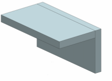
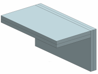
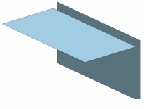
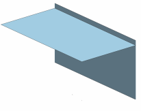
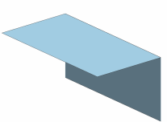
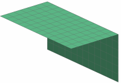

使用由实体构成的 CAD 装配，该装配可以是在 NX 中创建的，也可以是导入到 NX 中的。
下图显示的是由实体构成的简单装配。

为分析编辑或生成 CAD 数据：
生成组件中面
简化几何体(例如，移除小孔)
保持需要连接的中心点位置
如果需要，定义焊接几何体
下图显示第一步的装配生成中面后。

下图中，仅显示中面几何体，组件中面之间含有间隙。

编辑多边形几何体：
通过缝合中面来消除间隙
使用抽取工具移除由缝合遗留下来的较小面
下图显示缝合后的中面，间隙已经消除，但存在较小的面。

下图显示较小的面已被移除。

定义 CAE 实体(比如材料和物理属性表)，壳厚度可以被链接到 CAD 实体厚度。
在模型上生成壳网格。
下图显示使用四边形网格划分模型，网格中缝合的面沿共享的边保持连续性。

修改壳单元沿使用装配方法(比如圆角焊和角板)来加强结构刚度的边的厚度。